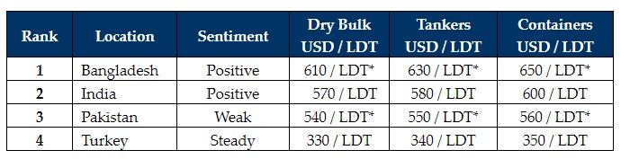

inWeekly Demolition Reports11/04/2023

With holidays underway across much of the world, it has been a far quieter week in terms of sales & activity, whilst sentimentsand pricing remain further muted as a result.
Several vessels have arrived in Bangladesh for delivery this week despite it taking much longer these days to get the L/Cs in order. As such, to have smooth boardings & beachings, it is therefore recommended to maintain at least five days prior arrival, in order to allow for local Buyers L/Cs to open, release, and be credited to Owners / Cash Buyers before vessels can beach.
Particularly in Bangladesh, the situation remains somewhat precarious in obtaining Central Bank Approval on the particularly higher value assets, so drastic remains the ongoing liquidity problem in the country.
In Pakistan, it has been nearly impossible to open any L/Cs and neither Owners nor Cash Buyers are considering Gadani as a viable destination, especially in the near future.
Finally, Turkey continues its dreary drudge through the year, week after week, with not much change to report other than local steel plate prices that have been fluctuating within a margin and a determined Lira that is steadily deteriorating against the U.S. Dollar.
Overall, pursuant to the conclusion of Chinese New Year holidays, there was an improvement in both Dry Bulk and Containers for trading / charter, and this has led to a dearth in vessels being proposed for recycling and arriving at most waterfronts, as port reports remained virtually empty across the sub-continent & Turkey through most of March.
Notwithstanding, recycling prices remain relatively steady / strong, as do local sentiments, which are expected to pick up further after the holidays this month, as demand increases and fundamentals stabilizes in the form of steel prices and most local currencies.
For week 14 of 2023, GMS demo rankings / pricing for the week are as below.

📄 Download PDF: Ship-recycling-market-insight-week-14-2023-Holiday-Season.pdfSource: GMS,Inc. ,https://www.gmsinc.net/gms_new/index.php/web